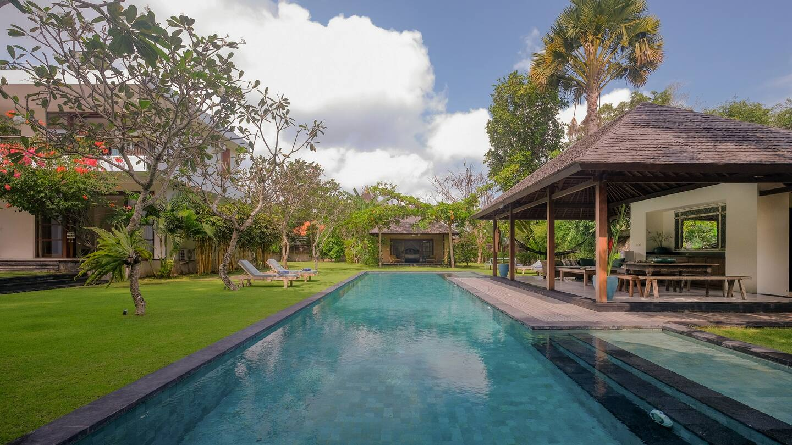

About The Villa
Villa Umah Tenang was built as best as it could with tropical garden feeling a blend of the modern building met the fresh and green ambience of the garden , as 2 story building and the massive lawn area is perfectly built as guest accommodation to ensure the safety and the comfort the guests. Well-furnished furniture and equipment offer its best to anyone who looking for a relaxing space and quite area to chill out by the villa but still within the distance to explore the Hip of the Canggu and surrounding.

Bedrooms
Built with 4 Bed room in total with a comfortable 40cm thick king size bed is set up in each room to ensure the comfort of the sleep quality, modern en-suite bath room in each bed room and massive garden and lawn area as an additional to fulfil the convenience.

Pool
A black stone 15 meters length pool is surrounded by sun loungers and overlooked by bale/gazebo and lush Lawn area. Landscaped gardens explode with color and vibrant greens providing the perfect backdrop for effortless entertaining with our staff there to prepare meals to order or to serve you drinks.

Sitting Room
TV and Library room at the based floor offers an air-conditioned working space with a 32-inch Smart Android TV for browse and Netflix application, comfortable sofas. Sliding doors lead out to a small outdoor smoking area and verandah.
Contact Us
Feel free to reach us if you looking for a proper place for your self and family quarantine , Open for any discussion about Budget
Check AvailabilityLocation
Kecamatan Mengwi, Bali, IndonesiaSeseh Area is a small village on the beach about 20 minutes north of Seminyak and 10 minutes from hip of Canggu area, half way to Tanah Lot. Seseh is widely used though to refer to a large coastal stretch, running north from the village of Berawa, Canggu, Echo beach, Pererenan and Seseh the village of Cemagi (just south of Tanah Lot) It is still a largely rural area away from the beaches, but is being developed fast.
The beaches have dark grey or black sand and are not particularly good for swimming, but do offer some renowned and challenging surfing and Sunset spots.